Update your Pocket Centre details
Your Pocket Centre profile page contains relevant information about your Pocket Centre such as contact details, Pocket Centre agreement, list of equipment on loan, list of staff, website and attachments.
-
You can only update the information for Pocket Centres where you are listed as staff. To view all Pocket Centres, click Centres found on the left menu. Pocket Centres where you are listed as staff are labeled "Your Pocket Centre".
To edit a Pocket Centre, click the card or the arrow floating button.
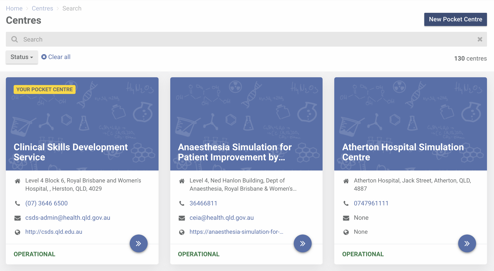 -
To update your Pocket Centre information, click on any field you want to update.
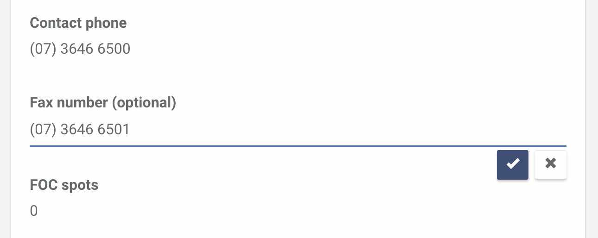 -
Pocket Centre Leads
To add or update your Pocket Centre Lead/s, click Edit.
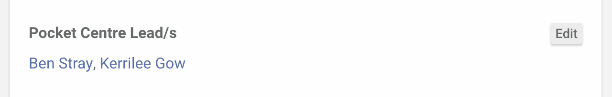Select staff that are nominated as Pocket Centre Lead/s. If you can't find who you are looking for in the list, it's most likely that they have not been added to the staff list of your Pocket Centre.
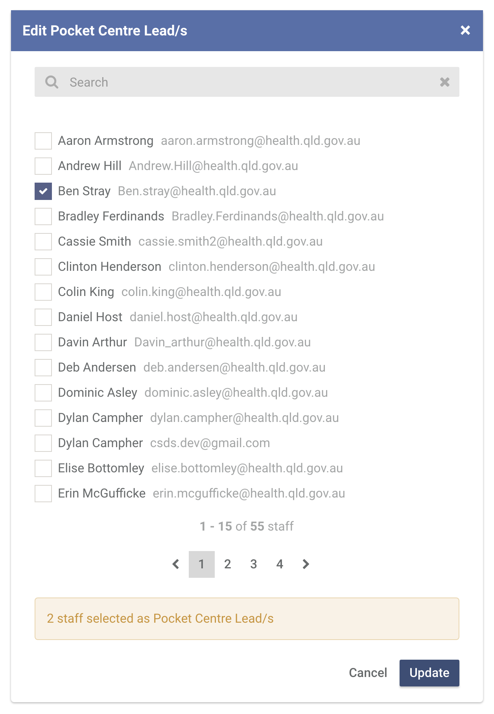 -
Adding staff to your Pocket Centre
To add staff to your Pocket Centre, click "Add staff" in the Staff section.
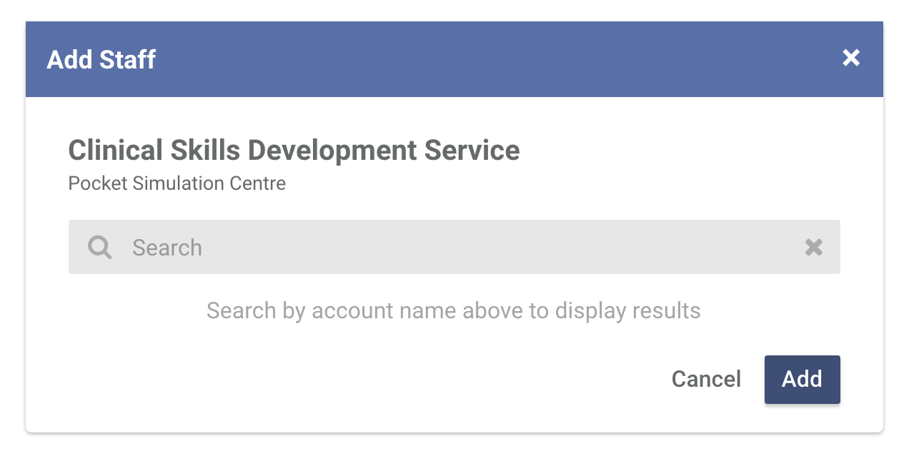In the Add staff dialog, search the account of the person to be added. The person you want to add must have a CSDS account.
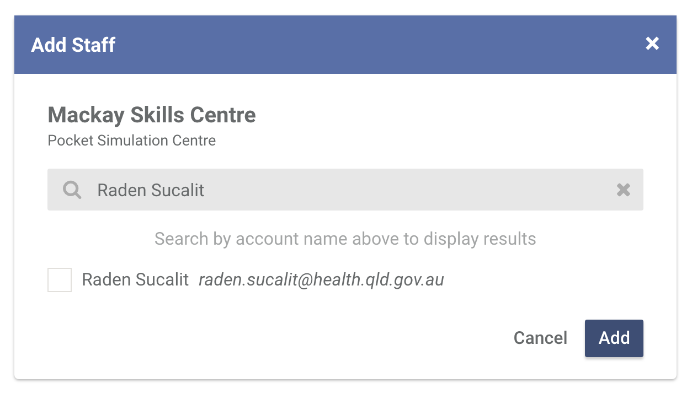 -
Equipment on loan
This section lists all equipment that are on loan at your Pocket Centre. To extend an equipment's due date or transfer your equipment to someone else in your Pocket Centre, please contact us.
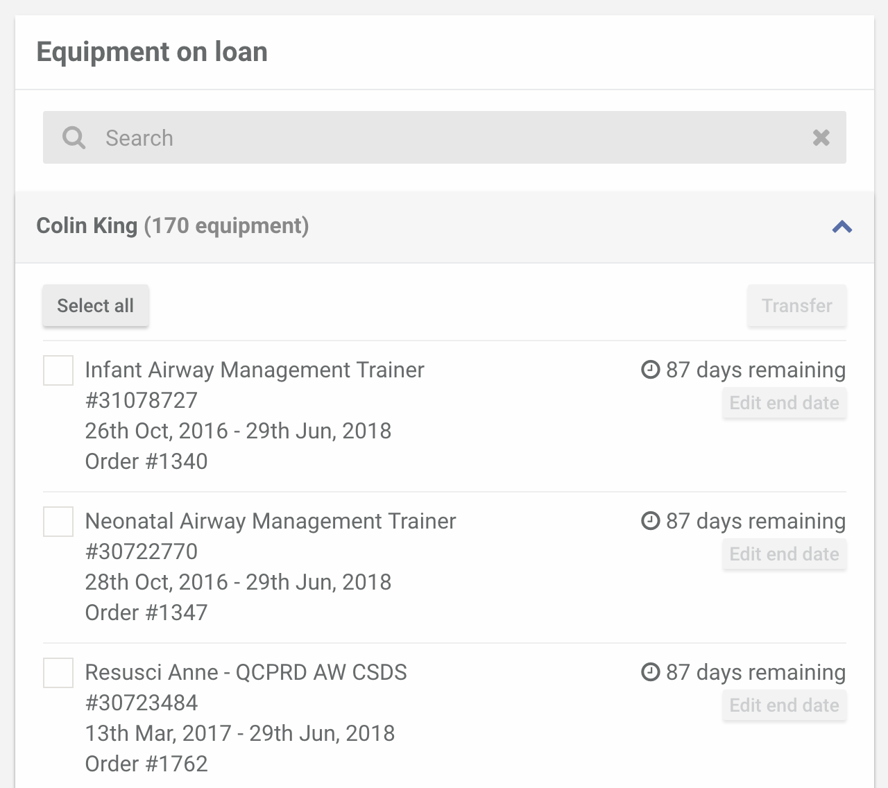 -
Attachments
This section allows you to manage documents that are related to the administration of your Pocket Centre.
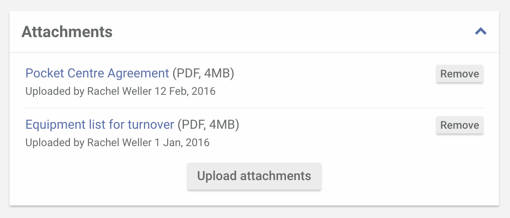If you want to upload resource with your Pocket Centre (or the entire Pocket Centre Network), consider sharing it under Resources instead.
-
Website
All Pocket Centres have the option to use (1) the CSDS-provided website, (2) their own website or (3) not have a website at all.
By default, a Pocket Centre will not have a website.
Using the CSDS-provided website
Selecting the "Use the CSDS-provided website"" option will enable your CSDS-provided website. Your website URL is your Pocket Centre name by default. If you would like to change this URL to something shorter, please contact us and we'll do it for you.
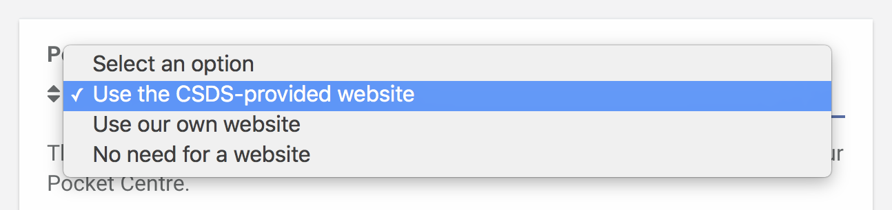We recommend that a brief description about your Pocket Centre be added in the . This text will appear in your landing page. You can also add a website background image if you want. If you don't supply a background image, a dark blue colour will be used by default.
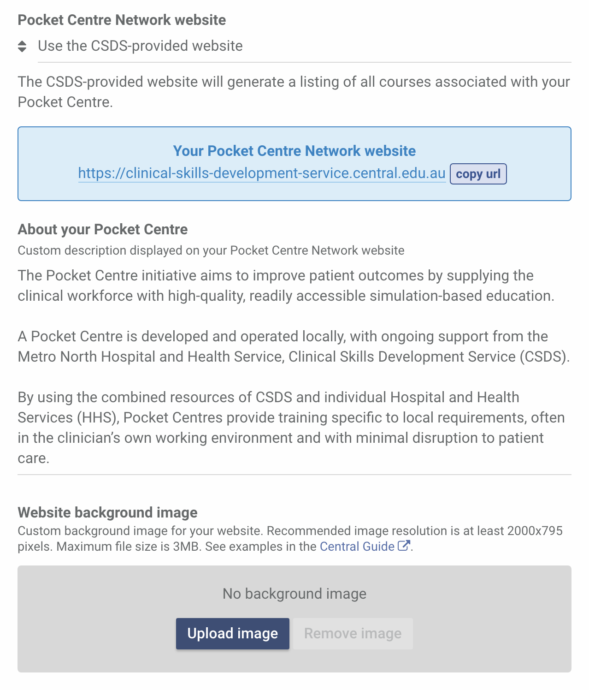To upload a custom background image to your website, click Upload image. In the popup that appears, drop or browse the image you want to use. For examples of these images, proceed to the next section.
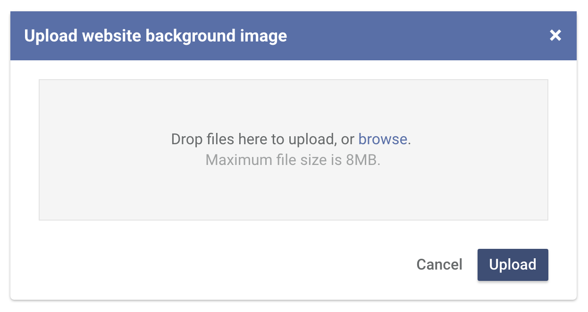To change the background image, just click the Remove image button and upload a new one.
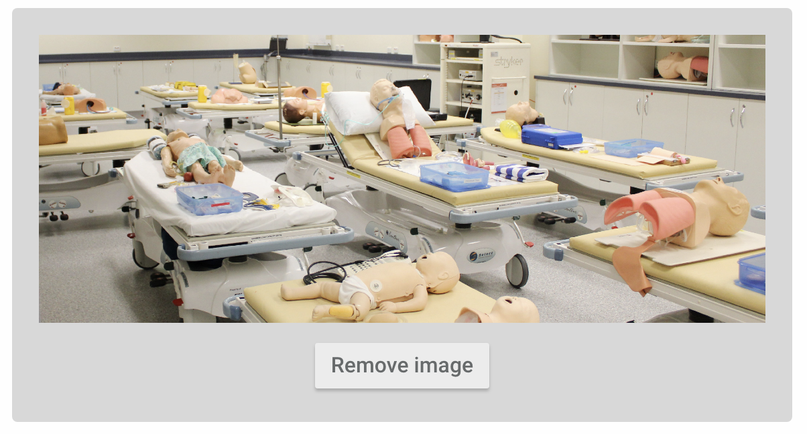Using your own website
If your Pocket Centre has an existing website, select the "Use our own website" option. By providing your website address (URL), we can add display it in your Pocket Centre email template and profile.
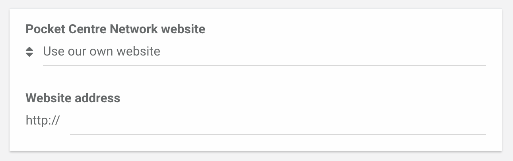 -
Examples of website background images
Here are a few examples of images you can use as background images for your website.
To use any of these images, click on your preferred image and your image should download automatically. Otherwise, right click on the image and select Save link as.
In the Website background image section, click Upload image and navigate to the image you have just downloaded and either drop or browse them to the popup.


{kind=link}